Teklatu Digitalak

MOOG Subsequent 37
Sintetizadore analogiko polifazetikoa, bi osziladore, baxu sakonak eta soinu indartsu eta aberatsak sortzeko aukera eskaintzen dituena. Zuzeneko emanaldietarako eta estudioko ekoizpenerako aproposa.
1.099 €
Erosi →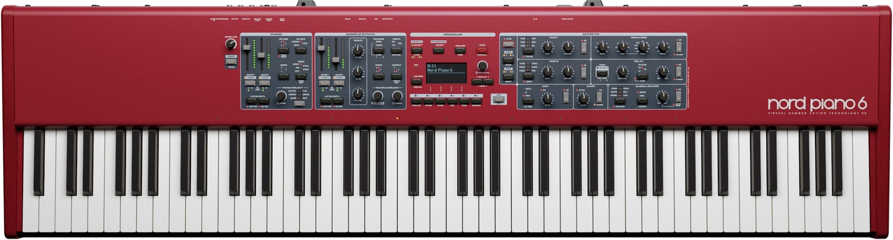
NORD Piano 6 88
88 teklako piano digital profesionala, piano akustikoen eta elektrikoen soinu errealistekin. Teklatu adierazkorra eta kontrol intuitiboak eskaintzen ditu, kontzertuetarako zein estudioan erabiltzeko ezin hobea.
5.789 €
Erosi →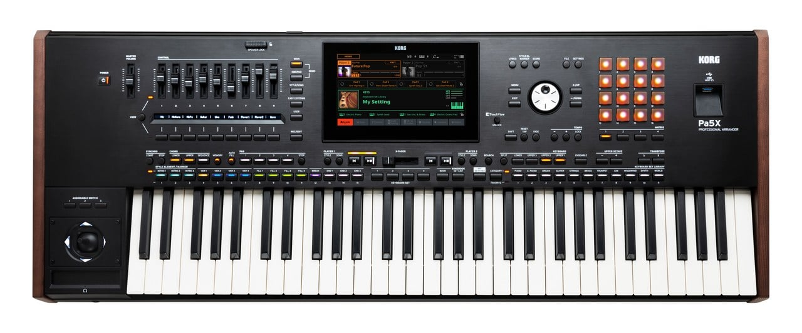
Korg PA5X-61
61 teklako workstation profesionala, erritmo, estilo musikal eta instrumentu-soinu ugari eskaintzen dituena. Abestiak sortzeko, moldaketak egiteko eta zuzeneko emanaldiei bizitasuna emateko aproposa.
8.045 €
Erosi →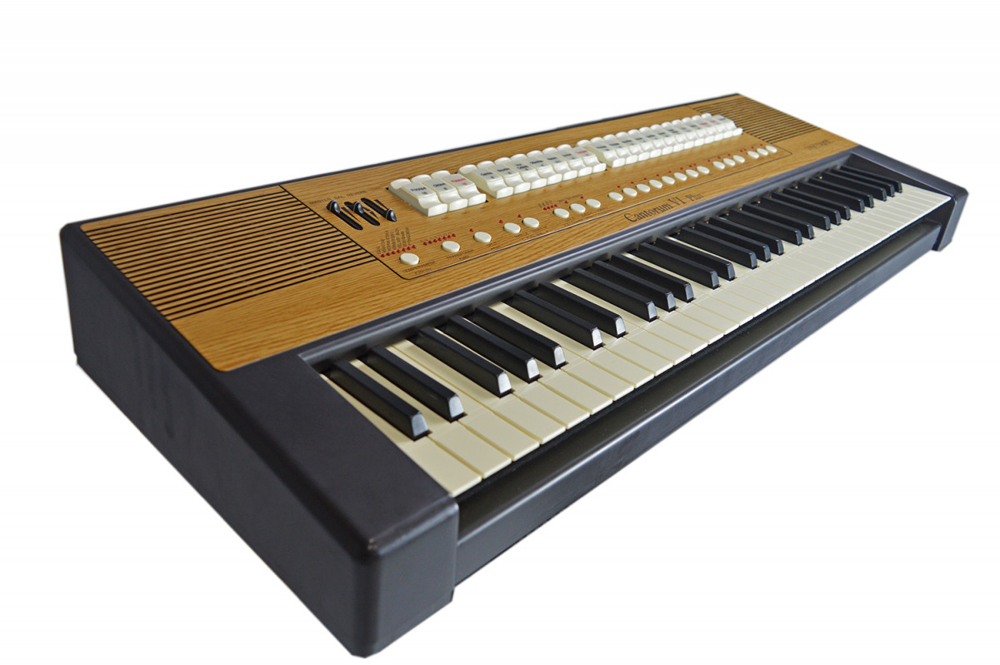
Viscount CANTORUM VI PLUS
Organo digital eramangarria, elizako organoaren soinu aberats eta adierazkorrak eskaintzen dituena. Kontzertu sakratuetarako, koruekin jotzeko eta organo-musikaz gozatzeko diseinatua.
15.690 €
Erosi →Teklatuak
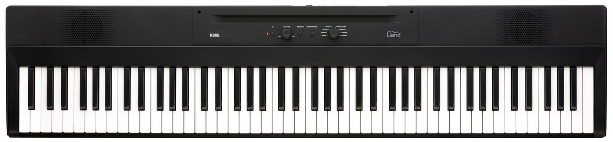
Korg Liano
Piano digital arina eta eramangarria, 88 tekla eta ukimen erosoarekin. Piano-soinu atsegina eta bozgorailu integratuak ditu, etxean ikasteko, praktikatzeko eta musika edonora eramateko aproposa.
550 €
Erosi →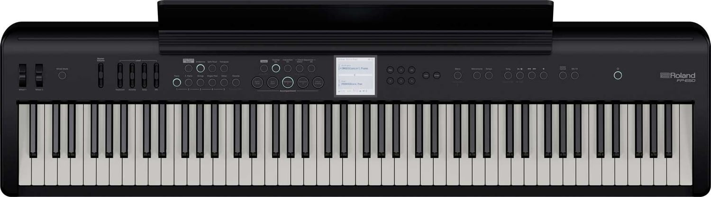
Roland FP-E50
Piano digital polifazetikoa, piano-soinu errealistekin, erritmo ugarirekin eta laguntza automatikoekin. Abestiak sortzeko, estilo musikal desberdinak lantzeko eta zuzeneko emanaldiez gozatzeko aukera ematen du.
799 €
Erosi →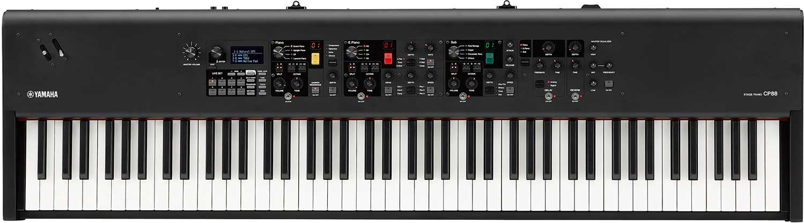
Yamaha CP88
Eszenatokietarako diseinatutako piano digital profesionala, piano akustiko eta elektrikoen soinu kalitate handiarekin. 88 teklek ukimen adierazkorra eskaintzen dute, kontzertuetarako eta estudioan erabiltzeko ezin hobea.
999 €
Erosi →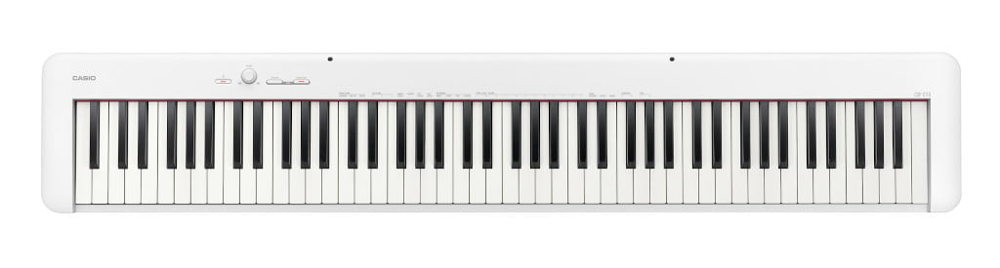
Casio CDP-S110
Piano digital trinkoa, 88 mailakatutako tekla eta piano akustikoaren ukimena imitatzen duen teklatuarekin. Diseinu arina eta erabilera erraza ditu, etxean ikasteko eta pianoa edonora eramateko aproposa.
1.459 €
Erosi →MIDI Teklatuak
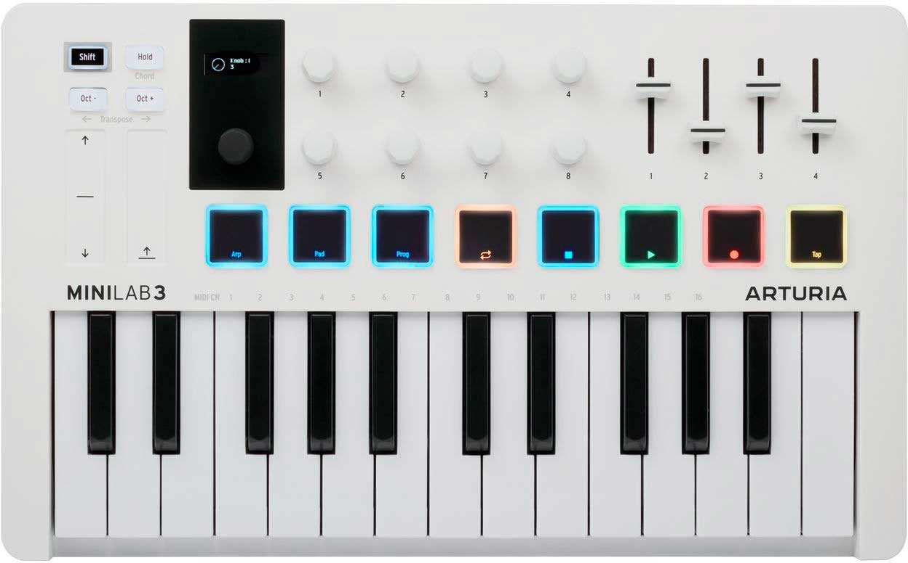
Arturia MiniLab 3
MIDI kontrolagailu trinkoa, 25 tekla sentikor, pad erritmiko eta kontrol birakariekin. Soinuak sortzeko, sintetizadoreak kontrolatzeko eta musika digitala ekoizteko ezin hobea, etxean zein estudioan erabiltzeko.
99 €
Erosi →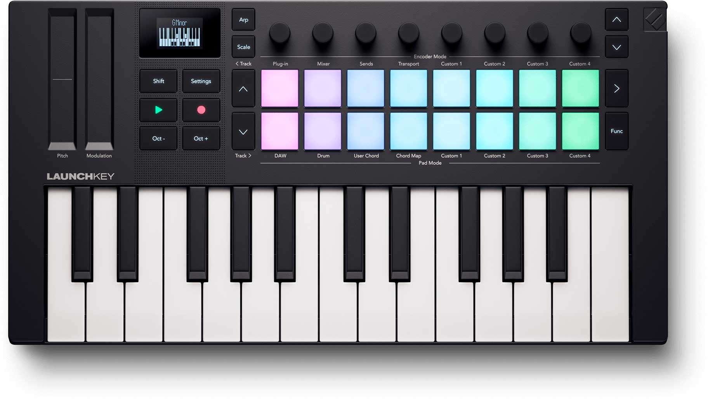
Novation Launchkey Mini 25 MK4
25 teklako MIDI kontrolagailua, pad sentikor eta kontrol intuitiboekin. Ableton Live eta beste musika ekoizpen-programa batzuekin lan egiteko diseinatua, erritmoak sortu eta melodiak modu errazean grabatzeko.
149 €
Erosi →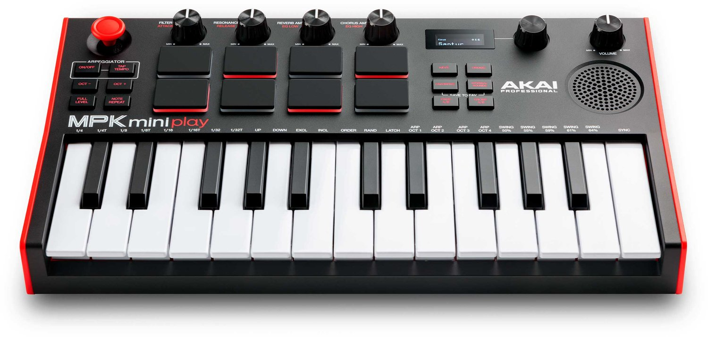
Akai MPK Mini Play MK3
MIDI teklatu eramangarria, 25 mini tekla, erritmo-padak eta barneko soinuekin. Ordenagailurik gabe ere jotzeko aukera eskaintzen du, eta oso egokia da ideiak sortzeko, erritmoak lantzeko eta musika edonon egiteko.
378 €
Erosi →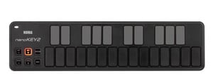
Korg nanoKEY2 Black
MIDI kontrolagailu ultra-trinkoa, 25 tekla lau eta ukimen sentikorrekin. USB bidez konektatzen da ordenagailura, eta melodiak grabatzeko, sintetizadoreak kontrolatzeko eta musika digitala sortzeko aproposa da.
15.690 €
Erosi →